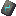
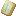
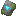
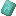
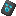
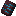

変更内容
- エンチャントされたアイテムと防具の輝きが控えめになりました。
| テクスチャ | 入手場所 | アイテム名（日本語名称未設定） |
|---|---|---|
|  | ピリジャーの前哨基地 | セントリーアーマートリム |
|  | 砂漠の寺院 | 砂丘のアーマートリム |
| 難破船 | 海岸のアーマートリム | |
|  | ジャングルの寺院 | ワイルドアーマートリム |
|  | 海底神殿 | 潮のアーマートリム |
|  | 古代都市 | ワードアーマートリム |
| 森の洋館 | ヴェックスアーマートリム | |
|  | ネザー要塞 | リブアーマートリム |
| 砦の遺跡 | スナウトアーマートリム | |
| エンド要塞 | アイアーマートリム | |
| エンドシティ | スパイヤーアーマートリム |
その他の情報はhttps://www.minecraft.net/en-us/article/minecraft-snapshot-23w04aに載っておりますのでそちらを確認ください。